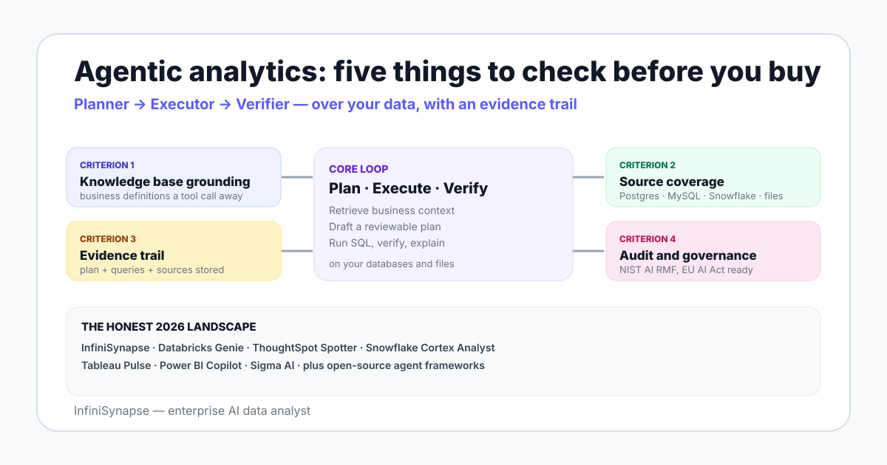

Agentic analytics is a working category, not a marketing label. The defining trait is that the system runs a loop — a planner picks a step, an executor performs it (running SQL, fetching a document, calling a tool), and a verifier checks the output before passing it back to the planner. Anthropic's Building Effective Agents notes describe the same pattern: a system that dynamically directs its own processes and tool usage to achieve a goal.
Applied to analytics, the loop reads schemas and business definitions, drafts a plan you can review, runs SQL against your databases, verifies the numbers, and returns an evidence trail. The trail — not the chart — is what makes the output defensible. A platform that answers but cannot show its work belongs in a different category.

Most accuracy failures on real schemas are not a model problem; they are a context problem. The agent does not know that status_code=2 means "refunded" or that "active customer" excludes paused accounts. A platform that lets you bind a curated knowledge base to each data source — and retrieves from it as a tool call before generating SQL — produces sharply more defensible numbers. Retrieval-augmented generation is the underlying pattern; see RAG for the canonical reference.
An agent that only reads one warehouse is a warehouse feature, not a data agent. Score the candidate on its native database connectors, file-format support (CSV, Parquet, S3), and ability to join across sources inside a single answer. Cross-source questions are where the long tail of business value sits.
Every result must come with a plan, the queries executed, the sources consulted, and a verification step. If the auditor cannot reproduce a number from the trail, the number is not defensible — and that holds whether the agent is right or wrong. Explainable AI data analysis covers the trail in more detail.
Read-only roles with scoped grants, plan review before execution, full query logging, and policy mapping to the NIST AI Risk Management Framework and ISO/IEC 42001. For European deployments add the EU AI Act obligations that ramp through 2026-2027.
Read the vendor's design. A loop with explicit planner, executor, and verifier roles — and a stored chain of thought you can inspect — outperforms a single-shot pipeline on accuracy and on trust. The ReAct paper formalised the reason-then-act pattern that good agentic systems still follow.
The market is not a single horse race; it splits cleanly into three sub-categories. Pick the sub-category first, then the vendor.
These ship inside a warehouse and target single-source workloads with a strong semantic layer. Databricks Genie sits inside the Databricks lakehouse and reads tables you have already modelled. Snowflake Cortex Analyst answers natural-language questions on Snowflake tables and ties into the Snowflake governance graph. They are excellent when your data already lives in one place and your metrics are agreed.
These extend an existing BI or semantic-layer product. ThoughtSpot Spotter adds an agent on top of ThoughtSpot's search-driven analytics. Tableau Pulse generates insight summaries on top of Tableau datasources. Power BI Copilot answers questions against Power BI semantic models. Sigma AI adds an agent inside Sigma's spreadsheet-style BI. They win when you already trust the semantic layer underneath them.
These are stand-alone enterprise AI data analysts that connect to many sources rather than one. InfiniSynapse sits here with self-developed LLM-Native RAG, the InfiniSQL engine, Plan-mode review, and a database plus knowledge base binding model that pairs each connected source with curated business definitions. Open-source agent frameworks also belong here for teams that want to assemble their own. Data agents win on cross-source investigation, on the long tail of un-modelled questions, and on regulated workflows where the evidence trail is the deliverable.
| Product | Sub-category | KB grounding | Source coverage | Evidence trail | Best for |
|---|---|---|---|---|---|
| InfiniSynapse | Data agent | Bound knowledge base per source | PG · MySQL · Snowflake · Supabase · S3 · CSV | Plan + queries + sources + verification | Cross-source investigation, regulated work |
| Databricks Genie | Warehouse-native | Unity Catalog metadata | Databricks lakehouse | Workspace audit log | Single-lakehouse questions |
| Snowflake Cortex Analyst | Warehouse-native | Semantic model file | Snowflake tables | Query history | Snowflake-resident analytics |
| ThoughtSpot Spotter | BI-platform | ThoughtSpot worksheets | Anything ThoughtSpot connects | Search history + lineage | Search-driven self-service |
| Tableau Pulse | BI-platform | Tableau metrics layer | Tableau datasources | Metric definitions log | Insight summaries for execs |
| Power BI Copilot | BI-platform | Power BI semantic model | Anything Power BI ingests | Tenant audit log | Microsoft-stack enterprises |
| Sigma AI | BI-platform | Sigma data model | Cloud warehouses Sigma supports | Workbook history | Spreadsheet-style BI users |
This is a categorisation table, not a leaderboard. The same vendor that wins for one team will lose for another. Read it by your own constraints — sources, audit posture, who asks the questions — and not by who has the loudest launch event.
Score each candidate from 1 to 5 on the five criteria, then weight each criterion by how much your team cares about it. A simple rubric beats a complex one because everyone reviews it the same way.
| Criterion | Weight (1-5) | Score (1-5) | Weighted | What to check |
|---|---|---|---|---|
| Knowledge base grounding | — | — | — | Does the agent retrieve business definitions before SQL? Can you edit the KB? |
| Source coverage | — | — | — | How many native connectors? Can it cross-join PG and a CSV in one answer? |
| Evidence trail | — | — | — | Is the plan, the SQL, the source list, and the verification step stored per result? |
| Audit posture | — | — | — | Read-only roles, plan review, NIST/ISO mapping, EU AI Act readiness |
| Loop shape | — | — | — | Explicit planner, executor, verifier? Or a single-shot prompt-to-SQL? |
No agentic platform fixes a missing metric definition. Decide what "active customer" or "qualified lead" means before any vendor demo.
| Scenario | Start with | Add next | Avoid first |
|---|---|---|---|
| One warehouse, agreed metrics, single team | Warehouse-native agent (Genie or Cortex Analyst) | A BI-platform agent for execs | A stand-alone data agent until cross-source need appears |
| Strong existing BI semantic layer | BI-platform agent (Spotter, Pulse, Copilot, Sigma AI) | A data agent for the un-modelled long tail | Building a second semantic layer |
| Cross-source: PG + Snowflake + files + docs | A data agent (InfiniSynapse or similar) | A warehouse-native agent for the heavy single-source slice | Hand-written ETL for every new question |
| Regulated industry (finance, healthcare, public sector) | A data agent with stored evidence trail | Map to NIST AI RMF and ISO/IEC 42001 | Any platform without a per-result audit chain |
| Startup with one Postgres database | A lightweight data agent or BI tool | A warehouse later when scale demands it | An enterprise BI suite on day one |
Agentic analytics earns trust the same way a senior analyst does: by showing the work. Three patterns matter at the platform level.
First, read-only credentials by default. The standard pattern is a database role with scoped grants — selects on the tables the agent needs and nothing else. Promotions to write access are deliberate, scoped, and logged. The autonomous data agent guide covers the role hierarchy in more detail.
Second, plan review before execution. Plan-mode lets a human review the analytical plan before the agent runs SQL — a control that maps directly to the "human oversight" pillar of the EU AI Act.
Third, stored evidence trail per result. The trail covers the plan, the SQL, the data sources consulted, the verification step, and any intermediate retrievals. ISO/IEC 42001 expects this level of process logging for AI management systems.
Connect a source read-only, seed a small knowledge base, and ask one cross-source question. Inspect the plan, the queries, the sources retrieved, and the verification step. Use that single result against the five criteria above before you make a category decision.
Try InfiniSynapse onlineLast updated: 2026-06-28 · Next scheduled review: 2026-09-28
Sub-categories on this page are grounded in vendor documentation for Databricks Genie, Snowflake Cortex Analyst, ThoughtSpot Spotter, Tableau Pulse, Power BI Copilot, Sigma AI, and InfiniSynapse, plus public benchmarks (BIRD, Spider) and governance frameworks (NIST AI RMF, ISO/IEC 42001, EU AI Act). The five-criterion rubric is a working framework — many products straddle two sub-categories and the line between agentic analytics and augmented BI continues to move.
Conflict of interest: InfiniSynapse publishes this guide and sells in the data-agent sub-category. To reduce bias, the page includes scenarios where warehouse-native and BI-platform agents win outright, an honest scoring rubric you can apply to InfiniSynapse, and external sources for every claim.
Update cadence: Reviewed every 90 days for vendor changes, benchmark figures, and governance updates.